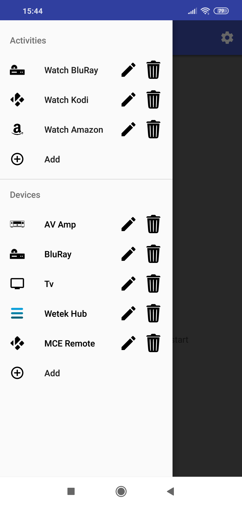

Navigation Menu
To view the Navigation Menu click on the menu icon (☰) at the top left corner of the screen.
From here you can:
- Use a Device Remote
- Add a device
- Edit (use
 ) an existing device
) an existing device - Delete (use ) an existing device*
- Run an activity
- Add an activity
- Edit (use ) an existing activity
- Delete (use ) an existing activity*
- Option to set all devices off (visible if any device is switched on).
*You cannot delete devices or activities when running an activity (see below).
When deleting a device, any Activity which uses the device will also be deleted (You will be prompted to confirm device deletion if activites will also be removed).
The text for devices which are currently switched on will be green.
The option to Set All Devices Off does not control any devices; this command merely changes the internally stored state for all devices to 'off' (see below).
You will not be able to add a new activity until you have added at least one device.
